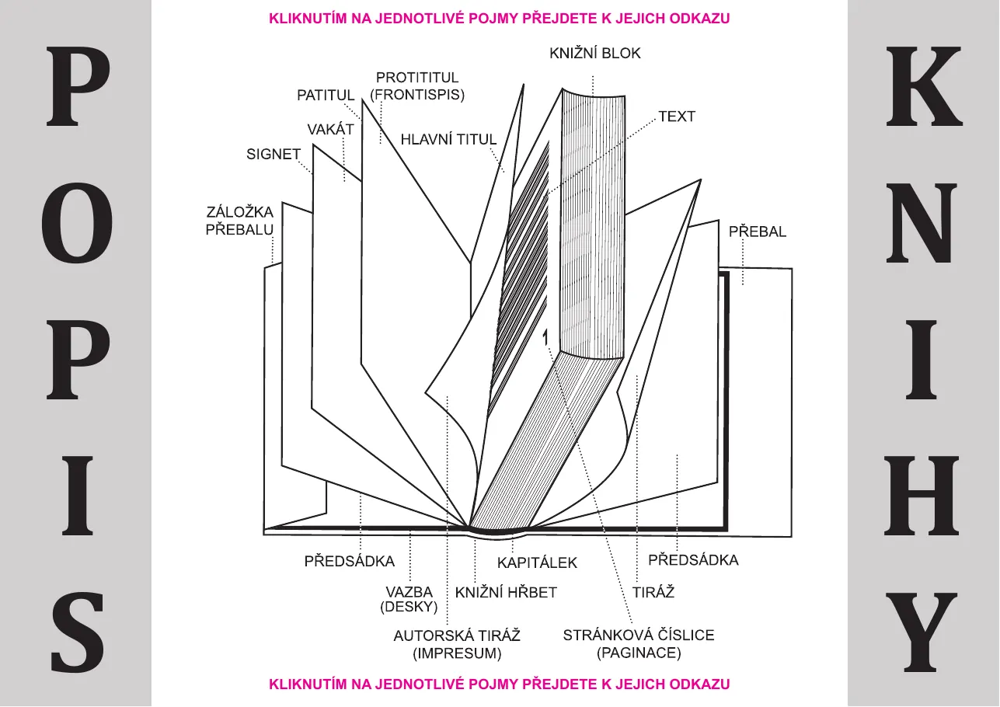
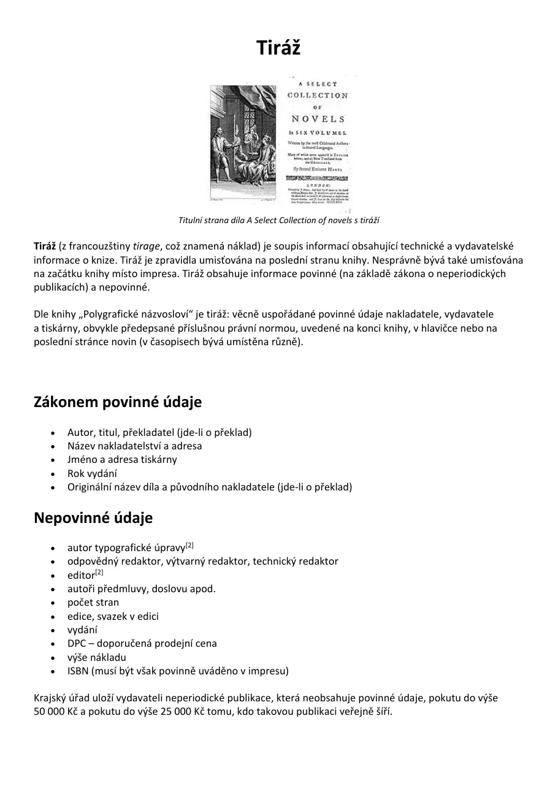

Cvičení· 1. pololetí · zadáno v Teamsech
Periodikum a kniha
Dvě velké práce prvního pololetí jsou zároveň nejlepší přípravou na InDesignové otázky 04, 06, 07, 12, 14, 15 a 21. Tady je souhrn toho, co se odevzdává, v jakém pořadí a jak se soubory jmenují. Aktuální týdenní úkoly a termíny jsou vždy v Teamsech.
- AAutorské periodikum
- BSazba knižní publikace
- CObálky V2, V8 a přebal
Autorské periodikum
Časopis, magazín, bulletin, sborník nebo čtvrtletník na vlastní téma. Tiskový soubor + webová podoba (e-zin). Hodnotí se průběžně po trojhodinovkách.
Parametry
- Formát A5 až A4, rozsah 16–40 stran včetně obálek, oboustranný tisk, spadávka 3 mm.
- Struktura: přední obálka · úvodník (editorial) · graficky upravený obsah · rubriky (novinky, rozhovor, reportáž, seriál, inzerce… včetně tabulky s tabulkovým a buňkovými styly) · zadní obálka.
- Přední obálka povinně: název periodika, logo (logotyp), název tématu čísla, dominantní obrazový motiv.
- Zadní obálka povinně: návrh obálky příštího čísla, vektorový čárový kód ISSN (lze použít funkční 1214-4029).
- Vzorová stránka s automatickou paginací (kromě čtyř stran obálek), plně lokalizovaný font, všechny texty česky kromě názvu.
- Důsledně znakové, odstavcové a objektové styly, TypoSkript, Hledat a nahradit, dynamická kontrola pravopisu.
- Texty a grafika v maximální míře vlastní autorské dílo; grafika připravená pro tisk, pro e-zin pak pro web.
Harmonogram odevzdávání
- Návrh přední obálky – JPEG nebo PDF,
Příjmení_Jméno_4G_návrh_obálky. - Dokončená obálka + editorial v kompletní šabloně periodika (min. 16 stran, okraje, vzorová stránka, styly). Sbalený zazipovaný projekt
Příjmení_Jméno_4G_PERIODIKUM. - Tři další stránky s rubrikami, paginace přes vzorovou stránku, tabulka s tabulkovým a buňkovými styly.
- Kompletní periodikum – zbylé rubriky, zadní obálka s upoutávkou a ISSN kódem.
- Finální soubory (poslední říjnový týden): tiskové PDF (CMYK, 300 dpi, Coated FOGRA39)
PRIJMENI_JMENO_4G_PERIODIKUM_TISK, e-zin (URL do Teamsů podle videa 05 online publikování), zazipovaný sbalený projekt s Links a Document fonts.
Souvisí s otázkami04 odstavcové styly, vzorové stránky, obsah · 06 písmo a typografie · 21 import textu a styly · 22 typy PDF
Sazba knižní publikace
Tiskový blok knihy se všemi náležitostmi + e-booková podoba. Text v češtině (čítanky, volně dostupné e-knihy, nebo vlastní maturitní projekt).
Parametry tiskového bloku
- 100–400 stran, počet dělitelný 4, formát B6 až B4 (B6, A5, B5, A4, B4), spadávka 3 mm, okraje od hranic sazebního obrazce k okrajům stránky alespoň 20 mm.
- Struktura: signet · patitul · frontispis · hlavní titul · impresum (autorská tiráž) · text knihy · vygenerovaný číslovaný obsah · tiráž na posledním listu.
- Kapitoly vždy na nové stránce (přes odstavcový styl), paginace, styly, TypoSkript, Hledat a nahradit, kontrola pravopisu.
- Pro e-book grafika upravená i pro elektronické zobrazení.
Harmonogram
- Layout knižní sazby (min. 100 stran, spadávka, okraje) – sbalený projekt
PRIJMENI_JMENO_4G_KNIHA_TISK. - Návrh přední obálky v samostatném souboru (rozměr stránky + 3 mm), PDF/X FOGRA39 –
PRIJMENI_JMENO_4G_KNIHA_OBÁLKA. - Patitul, frontispis, hlavní titul, impresum, technická tiráž.
- Nalitý a nastylovaný text, kapitoly na nové stránce, paginace.
- Opravené chyby po nalití textu, vygenerovaný číslovaný obsah.
- Export: PDF/X tiskového bloku v archové montáži
PŘÍJMENI_JMÉNO_4G_archová_montáž,…_KNIHA_ePub,…_KNIHA_iPDF.


Souvisí s otázkami04 · 12 e-knihy · 14 brožura, archová montáž, vazby, tiráž · 22 PDF
Obálky V2, V8 a přebal
Tři tiskové soubory PDF/X pro už odevzdaný tiskový blok + tři sbalené projekty = šest souborů.
V2 · paperback
Měkká vazba. Zadní strana + hřbet + přední strana. Spadávka 3 mm. Hřbet = počet stran × koeficient papíru.
Příjmení_Jméno_4G_obálka_V2
V8 · hardcover
Pevná vazba. Identická obálka, ale spadávka 15 mm, hřbetní drážky 8 mm, hřbetní značky posunuté o 2 mm (síla kartonu). Ručně doplnit 4 linky nahoře a 4 dole.
Příjmení_Jméno_4G_obálka_V8
Volný přebal
Jako V8 bez drážek, rozšířený o vnější záložky: A5 6–8 cm, B5 8–10 cm, A4 10–12 cm (luxusní publikace až 14 cm, paperbacky 6–7 cm).
Příjmení_Jméno_4G_obálka_záložky
Společné pro všechny tři
Vektorový čárový kód ISBN na zadní obálce (SVG z generátoru → Illustrator → EPS, CMYK). Pozadí dotažené na spadávku. Export PDF/X-1a, Coated FOGRA39, ořezové značky.
Co se odevzdává
Pojmenování souborů je součástí hodnocení. Vždy sbalený projekt (Soubor › Sbalit) se složkami Links a Document fonts, zazipovaný.
| Cvičení | Soubor | Parametry |
|---|---|---|
| Periodikum | PRIJMENI_JMENO_4G_PERIODIKUM_TISK.pdf | PDF/X-1a, CMYK, 300 dpi, A5–A4, Coated FOGRA39, spadávka 3 mm, ořezové značky |
| e-zin (URL) | Publish Online z InDesignu, odkaz do Teamsů | |
Příjmení_Jméno_4G_PERIODIKUM.zip | sbalený projekt | |
| Kniha | PRIJMENI_JMENO_4G_KNIHA_TISK.pdf / .zip | PDF/X-1a, CMYK, 300 dpi, B6–B4, FOGRA39, po stránkách |
PŘÍJMENI_JMÉNO_4G_archová_montáž.pdf | Print Booklet, oboustranný tisk | |
PRIJMENI_JMENO_4G_KNIHA_ePub.epub | reflowable ePub s hypertextovým obsahem a obálkou | |
PRIJMENI_JMENO_4G_KNIHA_iPDF.pdf | interaktivní PDF, bez slepených dvoustránek, záložky | |
| Obálky | Příjmení_Jméno_4G_obálka_V2 / _V8 / _záložky | PDF/X + zip pro každou; ISBN kód vektorově |
Co ze cvičení potkáš u maturity
Maturitní cvičení je vždy menší než pololetní práce – ale používá stejné postupy. Kdo zvládl periodikum a knihu, má většinu InDesignových otázek hotovou.
Odstavcové styly, vzorové stránky, obsah
Otázka 04 je zmenšené periodikum: 8 stran, provázaná pole, dvousloupcová sazba, tři styly, vygenerovaný obsah, paginace, obtékání, PDF/X.
Brožura a archová montáž
Otázka 14 je zmenšená kniha: 8 stran A5, obálka, tiráž, paginace bez obálky, TypoSkript, archová montáž na A3.
E-knihy
Otázka 12 opakuje poslední fázi knihy: export ePub s hypertextovým TOC a bitmapovou obálkou.
Import z Wordu a styly
Otázka 21: nalití docx do šablony a přemapování stylů – přesně to, co děláš při sazbě knižního textu.
Typografie
Otázka 06 zkouší pojmy, které při sazbě používáš denně: kerning, prostrkání, proklad, řezy, verzálky a kapitálky.
Otázka 22: PDF/X, PDF/A, interaktivní PDF a optimalizované PDF – všechny čtyři typy jsi při knize vyexportoval.